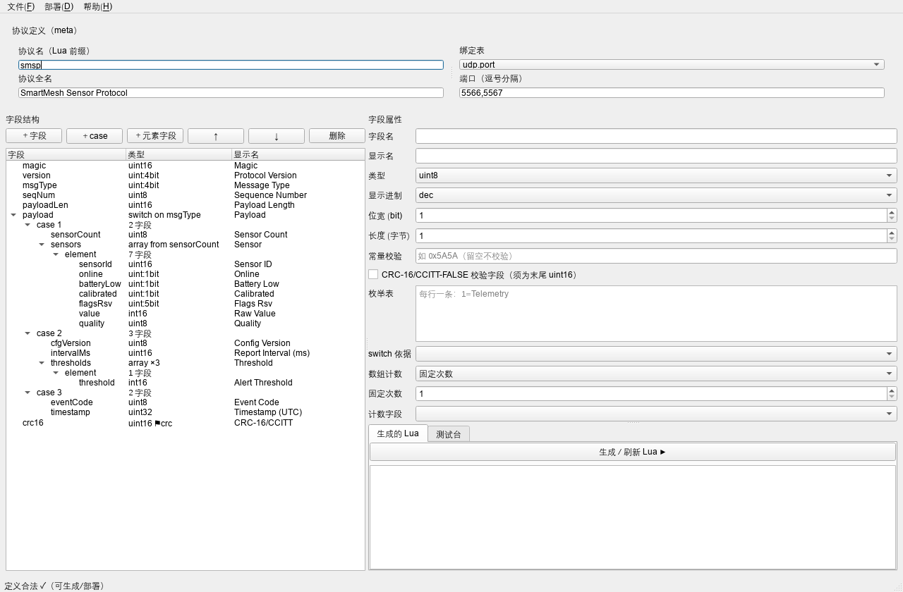
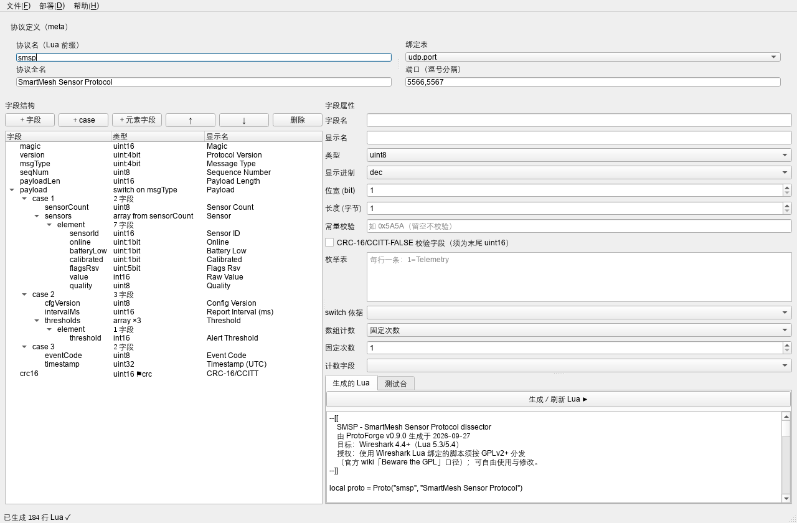
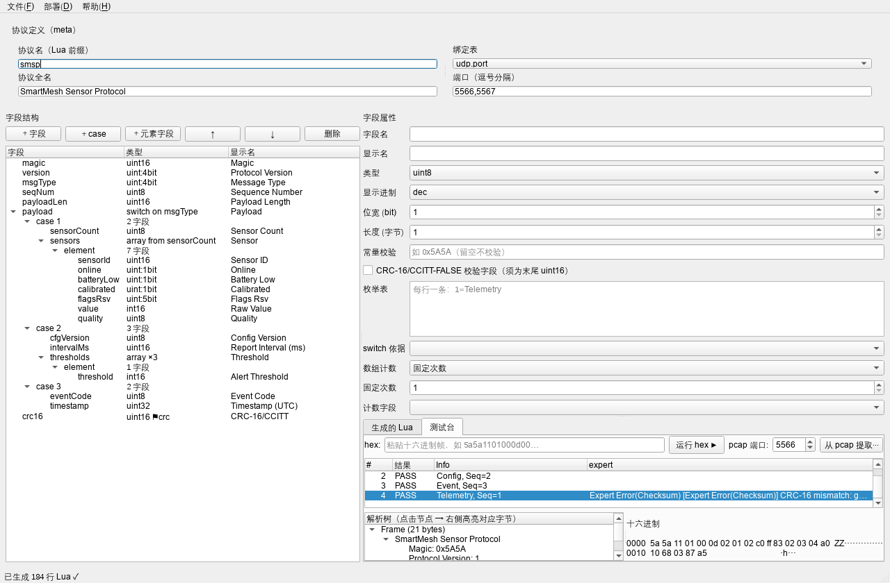
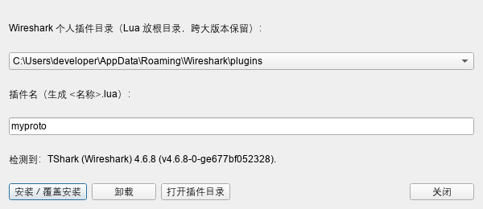

ProtoForge 使用手册
版本 v0.14.0 ｜ 2026-09-28 ｜ 适用于 Windows（Linux/macOS 同理）
ProtoForge 是一个 Wireshark Lua 解析器（dissector）生成器：声明式定义私有二进制协议，
一键生成完整 Lua 解析器、一键部署进 Wireshark、内置测试台免抓包验证。
1. 产品简介与工作原理
1.1 解决什么问题
任何跟私有二进制协议打交道的工程师（IoT、车载、工业、电信）都逃不过一件事：
让 Wireshark 能看懂自己的协议。官方路径只有一条——手写 Lua dissector。
这是公认的枯燥苦活：样板代码多、位域掩码易错、注册机制难懂、调试靠猜、
API 版本坑多（典型如 ByteArray:get() 在 4.6 里根本不存在，要用 get_index()）。
ProtoForge 把这件事变成「填表格」：
协议定义（GUI 表格 / JSON / CSV）
│ model.validate（校验：位域边界、引用、CRC 位置…）
▼
generator（生成器：位域掩码、switch 分支、数组循环、CRC 计算、expert 挂载、端口注册）
▼
完整 Lua dissector（.lua 文件，约为你手写量的 3 倍行数，但每行都对）
├──▶ 测试台：内置 mock 引擎真实执行 Lua，免抓包看解析树
└──▶ 一键部署：写入 Wireshark 个人插件目录，重启即生效
1.2 生成器替你挡掉的坑（实测验证）
以下坑全部来自开发期真实踩坑记录，生成器已内置规避：
| 坑 | 说明 |
|---|---|
ByteArray:get() 不存在 |
Wireshark 4.6 的正确 API 是 get_index()；生成器统一使用后者 |
| 数值字段不能传字符串值 | tree:add(pf, range, "文本") 会抛异常，须 add 后 append_text |
| 位域掩码与 bitfield 读取 | MSB 起算的 bitfield(offset, width) 与 mask 右移量极易算错 |
| 数组偏移双重推进 | 元素字段各自推进 off 后循环尾又加元素长度 → 越界读 |
块注释 -- [[ 多空格 |
变单行注释，第二行直接语法错误 |
| Lua 版本断代 | 4.4.0 起仅支持 Lua 5.3/5.4（原生位运算）；生成器锁定该基线 |
1.3 工作流总览
- 定义：在 GUI 里搭字段树（或导入 JSON/CSV）
- 生成：点「生成 / 刷新 Lua」，状态栏显示定义是否合法
- 验证：测试台粘一段真实报文的 hex（或从 pcap 提取），看解析树
- 部署：菜单「部署 → 安装到 Wireshark」，重启 Wireshark
- 实抓：用 Wireshark 正常抓包/打开 pcap，协议自动解析
2. 安装与启动
2.1 环境要求
- Python 3.10+
- Wireshark 4.4 或更高（仅「部署后实抓」需要；纯生成/测试台不需要装 Wireshark）
2.2 安装依赖
cd protoforge # 进入仓库根目录
pip install -r requirements.txt
依赖内容：PySide6（GUI）、lupa（测试台 Lua 引擎，需 lua54 运行时）、pytest（跑测试）。
2.3 启动
- 图形界面：双击
ProtoForge.bat，或命令行python -m protoforge.app.main_window - 命令行：
python -m protoforge --help（见第 9 节）
2.4 自检（可选）
python -m protoforge selftest
# 期望输出：[PASS] selftest OK（ProtoForge v0.14.0，绑定 [('udp.port', 65500, 'selft')]）
跑全量测试（75 个用例，含真实 tshark E2E）：
run_tests.bat # 或：python -m pytest tests -q
3. 五分钟快速上手
以自带示例 SMSP（智慧农业传感器协议）走完整流程。
3.1 打开示例
启动 GUI → 菜单「文件 → 打开 JSON…」→ 选择 examples/smsp.json。
左侧字段树出现 7 个顶层字段（magic/version/msgType/seqNum/payloadLen/payload/crc16），
状态栏显示「定义合法 ✓」。

3.2 生成 Lua
点右下「生成 / 刷新 Lua ▶」按钮，右侧出现约 180 行完整 Lua 代码。
可「文件 → 导出 Lua…」保存，或直接进入下一步。

3.3 测试台验证
切到「测试台」标签 → 「从 pcap 提取…」→ 选 examples/demo.pcap（端口保持 5566）。
出现 4 帧：3 帧 PASS 无告警，第 4 帧 expert 列显示红色 CRC 错误（该包是故意损坏的）。
点击某帧 → 下方左侧显示解析树；点击树中任意节点，右侧十六进制对应字节蓝色高亮。
试试点 Sensor [0]（对应 6 字节元素）和 CRC-16/CCITT（末尾 2 字节）。

3.4 部署进 Wireshark
菜单「部署 → 安装到 Wireshark…」：

- 插件名填
smsp（生成smsp.lua） - 确认目标目录（Windows 默认
%APPDATA%\Wireshark\plugins） - 点「安装 / 覆盖安装」→ 重启 Wireshark
3.5 实抓验证
用 Wireshark 打开 examples/demo.pcap——每行 Info 列显示 Telemetry, Seq=1 等，
点开任意包可看到完整解析树，包括 Wireshark 原生位域渲染：
0001 .... = Protocol Version: 1
.... 0001 = Message Type: 1
Sensor [0]
Sensor ID: 0x0102
1... .... = Online: True
.1.. .... = Battery Low: True
Raw Value: -125
Quality: Good (2)
CRC-16/CCITT: 0x875a [correct]
第 4 包会显示红色 Expert Info（Error/Checksum）——CRC 校验在工作。
4. 界面详解
4.1 布局
┌────────────────────────────────────────────────────────────┐
│ 菜单栏：文件 / 部署 / 帮助 │
├──────────────────────┬─────────────────────────────────────┤
│ 协议定义（meta） │ 协议名 / 全名 / 绑定表 / 端口 │
├──────────────────────┼─────────────────────────────────────┤
│ 字段结构（树编辑器） │ 字段属性（表单） │
│ ＋字段 ＋case │ │
│ ＋元素字段 ↑ ↓ 删除 ├─────────────────────────────────────┤
│ │ [生成的 Lua] [测试台] ← 标签页 │
├──────────────────────┴─────────────────────────────────────┤
│ 状态栏：定义校验结果（合法 ✓ / ⚠ n 个定义问题：首个原因） │
└────────────────────────────────────────────────────────────┘
4.2 协议定义（meta）区
| 控件 | 说明 |
|---|---|
| 协议名 | Lua 里 Proto("名字", …) 的短名，也是过滤器前缀（如 smsp.magic），须为英文标识符 |
| 协议全名 | 显示在解析树根节点 |
| 绑定表 | udp.port 或 tcp.port（v1 单绑定） |
| 端口 | 逗号分隔，可多个（如 5566,5567） |
4.3 字段结构（树编辑器）
- 列：字段名 / 类型（自动摘要，如
uint:4bit、switch on msgType、array from sensorCount、⚑crc）/ 显示名 - ＋字段：在当前选中层级追加字段（选中 case 或 element 内时追加到对应容器）
- ＋case：选中 switch 字段后可用，新增一个分支
- ＋元素字段：选中 array 或其 element 节点后可用
- ↑ / ↓：同级移动
- 删除：删除选中字段/case（element 容器本身不可删，删光其内容即可）
- 树节点层级：顶层字段 → case N（switch）→ 字段…；数组 → element → 字段…
4.4 字段属性（表单）
选中树中任意字段后按类型动态显示（无关控件自动隐藏语义：均显示但仅对应类型生效）：
| 属性 | 适用类型 | 说明 |
|---|---|---|
| 字段名 | 全部 | 英文标识符，全树唯一 |
| 显示名 | 全部 | 解析树里的标签 |
| 类型 | 全部 | 12 种，见第 5 节 |
| 显示进制 | 数值 | dec / hex |
| 位宽 | bitfield | 1-7 bit；连续 bitfield 自动打包成字节边界 |
| 长度 | string/bytes | 定长字节数 |
| 常量校验 | 数值 | 如 0x5A5A，不匹配时挂 WARN expert |
| CRC 复选框 | uint16 | 标记为 CRC-16/CCITT-FALSE 字段（必须是最后一个顶层字段） |
| 枚举表 | 数值/bitfield | 每行一条 1=Telemetry |
| switch 依据 | switch | 下拉列出在此之前声明的字段 |
| 数组计数 | array | 固定次数 / 按字段计数（下拉选此前声明的字段） |
改动即时回写模型，状态栏实时刷新校验结果。
4.5 生成的 Lua（标签页）
「生成 / 刷新 Lua ▶」按当前定义重新生成；内容只读（改了也会被下次生成覆盖——
生成物属于机器，协议定义才属于你）。导出走菜单「文件 → 导出 Lua…」。
4.6 测试台（标签页）
见第 8 节。
5. 协议定义详解（类型系统）
5.1 字段类型一览
| 类型 | 字节 | 说明 |
|---|---|---|
uint8/16/24/32 |
1-4 | 无符号整数，大端（网络序） |
int8/16/32 |
1-4 | 有符号整数（补码），大端 |
uint + width 1-7 |
— | 位域。连续声明的位域自动打包，总位数必须凑成 8/16/24/32 的整字节边界；按声明顺序从 MSB 分配 |
string |
size | 定长字符串 |
bytes |
size | 定长原始字节（hex 显示） |
switch |
变长 | 条件分支：按 on 字段的运行时值选择 case 字段组 |
array |
变长 | 重复结构：固定 count 次或按 count_from 字段的运行时值 |
5.2 位域打包规则（重点）
连续的 bitfield 字段按声明顺序从最高位（MSB）往低位分配：
version (4bit) + msgType (4bit) → 1 字节：version 占 bit7-4，msgType 占 bit3-0
online(1) + batteryLow(1) + calibrated(1) + flagsRsv(5) → 1 字节
校验规则：一组连续位域总宽必须是 8/16/24/32，否则报「不成字节边界」错误。
宽度为 1 的位域在 Wireshark 里渲染为 True/False 布尔量（1... .... = Online: True）。
5.3 switch（条件分支）
on指向的字段必须在 switch 之前声明（顶层作用域）- 每个 case 一组字段列表，运行时按值匹配；未匹配值显示
Payload (unknown msgType 9) - case 内可继续嵌 array（如传感器列表）；v1 不允许 switch 嵌 switch（拆成两级字段即可表达大多数协议）
5.4 array（数组）
count：固定次数（如 3 个阈值）count_from：次数来自此前某字段的运行时值（如sensorCount）- 元素必须是定长字段组合（数值/位域/string/bytes），元素大小自动计算
- 每个元素渲染为独立子树
Sensor [0]、Sensor [1]…
5.5 CRC-16/CCITT-FALSE
- 声明方式：末尾的
uint16字段勾选 CRC - 语义：覆盖从帧首到该字段之前的全部字节；poly 0x1021、init 0xFFFF
- 行为：比对一致显示
CRC-16/CCITT: 0x875a [correct]；不一致显示
[incorrect, expected 0x…]并挂 Error/Checksum expert（Wireshark 里可按_ws.expert过滤）
5.6 自动附赠的防御性检查
生成器无需配置即包含：
- 过短包守卫：小于「固定头+尾」的包直接报
Packet too short（Error/Malformed） - payloadLen 语义检查：meta 里配
length_check后，长度字段值与实际帧长不符时挂 WARN - 尾随字节检查：解析完成后剩余字节挂 WARN（
N trailing bytes） - 幻数检查：配置
const的字段不匹配时挂 WARN - Info 列填充：自动用「消息类型名 + Seq=N」填充（如
Telemetry, Seq=1）
5.7 校验错误对照表（状态栏）
| 提示 | 原因与修法 |
|---|---|
| bitfield 组 … 共 N bit，不成字节边界 | 补位域或调宽度凑 8/16/24/32 |
| switch 的 on 字段 … 未在其之前声明 | 把依据字段移到 switch 前面 |
| array 需要 count 或 count_from 之一 | 二选一填写 |
| crc16 字段必须是最后一个顶层字段 | 移到末尾 |
| 字段名重复 | 全树唯一，改掉重名 |
| 非法字段名 | 只允许 [A-Za-z_][A-Za-z0-9_]* |
6. JSON 格式参考
完整 Schema 与字段说明见 PROTOCOL_SCHEMA.md。摘要：
{
"meta": {
"name": "smsp", // 必填，Lua 前缀
"long_name": "SmartMesh Sensor Protocol", // 显示名
"length_check": { "field": "payloadLen", "region": "payload" } // 可选
},
"bindings": [
{ "table": "udp.port", "ports": [5566, 5567] }
],
"fields": [
{ "name": "magic", "label": "Magic", "type": "uint16",
"display": "hex", "const": "0x5A5A" },
{ "name": "version", "type": "uint", "width": 4 },
{ "name": "msgType", "type": "uint", "width": 4,
"enum": { "1": "Telemetry", "2": "Config" } },
{ "name": "payload", "type": "switch", "on": "msgType",
"cases": {
"1": [
{ "name": "sensorCount", "type": "uint8" },
{ "name": "sensors", "type": "array", "count_from": "sensorCount",
"element": [
{ "name": "sensorId", "type": "uint16", "display": "hex" },
{ "name": "online", "type": "uint", "width": 1 }
] }
]
} },
{ "name": "crc16", "type": "uint16", "display": "hex",
"crc16": "ccitt_false" }
]
}
字段属性键：name/label/type/width/display/enum/const/size/on/cases/count/count_from/element/crc16。
7. CSV 格式参考
CSV 适合平铺协议（无 switch/array）。表头列（顺序不限，name、type 必需）：
name,label,type,width,display,enum,const,size
指令行（以 # 开头，放表头之前）：
# proto: name=flat long_name=FlatDemo
# bind: udp.port 7777 8888
数据行示例：
magic,Magic,uint16,,hex,,0x5A5A,
kind,Kind,uint,4,,1=A;2=B;3=C,,
tag,Tag,string,,,,,3
- enum 单元格语法：
1=A;2=B;3=C - 「文件 → 导入 CSV…」导入；「导出 CSV…」导出（含 switch/array 时会提示改用 JSON）
- 完整示例：
examples/flat.csv
8. 测试台使用指南
8.1 两种输入
| 方式 | 操作 | 说明 |
|---|---|---|
| hex 直贴 | 顶部输入框粘贴十六进制 → 「运行 hex ▶」 | 空格可选、0x 前缀可选；适合单帧快速验证 |
| pcap 提取 | 设端口 → 「从 pcap 提取…」选文件 | 自动按端口（源或目的）提取全部应用层帧；仅支持 classic pcap |
8.2 结果解读
- 帧列表：# / 结果（PASS=执行完成，FAIL=执行异常）/ Info / expert 摘要
- 解析树：与 Wireshark 详情窗格同构；红色行为 expert 告警
- 十六进制窗格：点击树节点 → 对应字节蓝色高亮（偏移与长度来自生成代码的真实 range）
8.3 常见 expert 含义
| 显示 | 含义 |
|---|---|
Expert Error(Checksum) CRC-16 mismatch |
CRC 不符（抓包丢包/协议理解错/字节序错） |
Expert Warn(Malformed) Packet too short |
帧短于最小结构 |
Expert Warn(Malformed) N trailing bytes |
帧尾有多余字节（常见于长度字段算错或分帧错误） |
Expert Warn(Protocol) Constant mismatch |
幻数不符（端口被别的协议占用/偏移错） |
8.4 工作原理（为什么不用装 Wireshark）
测试台内嵌 lupa(Lua 5.4) 与一套按 Wireshark 4.6 行为校准的 mock API
（Proto/ProtoField/TreeItem/Tvb/ByteArray/expert…），真实执行生成的 Lua 代码。
它校准过的行为包括位域掩码显示、get_index()、数值字段不接受字符串值等。
结论与真实 tshark 一致（本项目 E2E 测试双通道互验），但最终仍建议部署后用真机复核。
9. 命令行（CLI）参考
python -m protoforge --version
# 生成（spec 支持 .json 与 .csv；-o 省略时输出到 stdout）
python -m protoforge generate examples/smsp.json -o out/smsp.lua
# 验证：hex 单帧
python -m protoforge verify out/smsp.lua --hex 5a5a1101000d00875a
# 验证：从 pcap 提取（--port 默认 5566）
python -m protoforge verify out/smsp.lua --pcap examples/demo.pcap --port 5566
# 部署（--dir 省略时自动发现 Wireshark 个人插件目录）
python -m protoforge deploy out/smsp.lua --name smsp [--dir "路径"]
# 内置端到端自检
python -m protoforge selftest
退出码：0=成功；1=有 FAIL 帧/无匹配帧；2=参数或加载错误。CI 友好。
10. 部署与 Wireshark 版本兼容
10.1 插件目录（自动发现）
| 平台 | 个人插件目录 |
|---|---|
| Windows | %APPDATA%\Wireshark\plugins\ |
| Linux | ~/.local/lib/wireshark/plugins/ |
| macOS | ~/.local/lib/wireshark/plugins/ |
Lua 脚本放目录根（不进 4.x 版本子目录）——官方口径：大版本升级不丢插件。
卸载 = 删除对应 .lua 文件（部署对话框有卸载按钮）。
10.2 版本兼容
- 生成代码面向 Wireshark 4.4+（Lua 5.3/5.4，原生位运算）
- 4.4.0 移除了 Lua 5.1/5.2 支持（有破坏性变更先例）；若你们公司还在 3.x，需评估后再用
- 部署对话框会显示检测到的 tshark 版本；无 tshark 也可正常部署（只是无法本地验证）
10.3 安装后不生效排查顺序
- 完全退出 Wireshark 再重开（包括托盘）
- 「帮助 → 关于 Wiireshark → 文件夹」确认个人插件目录路径与部署目标一致
- Wireshark 启动参数没有
-o lua.enable:false - 用
tshark -v确认版本 ≥ 4.4
11. 故障排查 FAQ
Q1：状态栏提示「定义问题」，但我看不出哪里错？
按第 5.7 节对照表排查；一次只修第一个错误（后面的可能是连锁）。
Q2：测试台树里值显示和预期差 16 倍/256 倍？
典型字节序或位域分配问题：本工具全部按大端（网络序）；位域从 MSB 分配，
把 version/msgType 的声明顺序对调即可对调半字节。
Q3：CRC 永远 incorrect？
按序检查：① CRC 覆盖域是「帧首到 CRC 字段前」，确认构造测试帧时没把 CRC 本身算进去；
② 算法是 CCITT-FALSE（init 0xFFFF），与 XMODEM（init 0x0000）不是同一个；
③ 用 python -m protoforge verify --hex 单帧调试最直观。
Q4：真实 Wireshark 里没解析，测试台却正常？
① 端口号没对上（绑定的端口=报文目的端口或源端口）；
② TCP 流量大时 Wireshark 可能把 payload 当已知协议（如 5060/HTTP），换冷门端口；
③ 见 10.3 排查顺序。
Q5：Lua Error: ... 'get_index' 之类报错？
不会出现——生成器统一用 4.6 实测 API。若你手改过生成物，恢复重新生成即可。
Q6：想解析的协议有「按长度字段跳过的变长 blob」？
用 length_from（v0.10 起支持）：string/bytes 按引用字段的字节数定长，数组按
「区域字节数 ÷ 元素尺寸」计数；越界会自动钳制并挂 Length mismatch 告警。
注意 length_from 数组的元素必须全为定长字段（变长元素在路线图中，见第 13 节）。
Q7：生成的 Lua 我能改吗？
能跑，但下次生成会覆盖。正确姿势是改协议定义。生成物头部已声明 GPLv2+，
你可以自由分发它。
12. 授权与合规
- 生成的
.lua文件：使用 Wireshark Lua 绑定，按官方 wiki「Beware the GPL」口径
以 GPLv2+ 分发。你在产品里使用/分发生成物时遵守 GPL 即可（内部使用无额外义务）。 - ProtoForge 工具本体：不链接、不分发 Wireshark 代码，可闭源商业分发
（「免费核心 + Pro」模式的法律基础，详见调研报告）。 - 商标：产品名 ProtoForge 不含 "Wireshark"；对外描述用 "for Wireshark"
的兼容性表述，并注明非官方、与 Wireshark 基金会无关。
13. 路线图与已知限制
v0.10–v0.14 已新增（此前为限制项）：
- 小端字节序：协议级默认 + 字段级覆盖（
meta.byte_order/ 字段byte_order） - 变长字段/数组：string/bytes/数组支持
length_from（按字节区域长度，越界自动钳制并告警） - 终止符字符串：string 支持
terminated_by（如 0x00 结尾，内容显示不含终止符） - 校验和家族：CRC-16/CCITT-FALSE 之外新增 MODBUS（低字节在前）、XMODEM、SUM8、SUM16
- 嵌套 switch 与 default 分支：case 内可嵌套 switch（须为末项）；未命中走 default 分支
- pcapng 读取：测试台与 CLI 均支持 pcapng（自动识别字节序）
- 多绑定：同一协议同时绑定 udp+tcp 端口（JSON bindings 数组 / GUI 绑定表 / CLI 多端口）
- 启发式注册：
meta.heuristic= udp/tcp 时生成启发式解析器（按首字段 const 快速判别）
v1 仍未支持（路线图）：
| 特性 | 状态 | 说明 |
|---|---|---|
| length_from 变长元素数组 | 路线图 | 元素自身长度可变的场景（当前 length_from 数组要求元素全定长，变长元素会被校验拒绝） |
| switch 嵌套于 array 元素 | 路线图 | 元素内仅允许定长字段 |
| pcapng 写入 | 路线图 | 测试台只读 |
| Kaitai .ksy 导入 | 路线图 | 借力其协议描述生态 |
| AI 辅助生成 | 路线图 | "spec → Lua" 的 prompt 链路已可行，产品化待定 |
| 大端位域之外的位序自定义 | 路线图 | 位域按 MSB 分配 |
已知限制：
- TCP 流重组、heuristic 之外的动态解绑不在范围内
- GUI 的启发式下拉可选 无 / udp / tcp；启用后需在绑定表中保留对应（udp/tcp）端口绑定
- 详见
docs/PROTOCOL_SCHEMA.md的校验规则清单与字段说明
ProtoForge v0.14.0 · 本手册随源码交付于 docs/USER_MANUAL.md · 截图由 tools/make_screens.py 生成